<div class="pages">
	<div data-page="projects" class="page no-toolbar no-navbar">
		<div class="page-content">
			<div class="navbarpages">
				<div class="nav_left_logo"><a href="index.html"></a></div>
				<div class="nav_right_button"><a href="menu.html"></a><a href="#" class="back" data-force="true"></a></div>
			</div>
			<div id="pages_maincontent">
				<h2 class="page_title">Espondilitis anquilosante</h2>
				<div class="page_content">
					<blockquote>Definición</blockquote>
					<p>La espondiloartritis axial se refiere a una inflamación crónica del esqueleto axial que se presenta como dolor y rigidez inflamatoria en la espalda baja. La Espondilitis Anquilosante (EA) es una enfermedad crónica multisistémica que compromete primariamente las articulaciones sacroiliacas (SI) y el esqueleto axial resultando en dolor lumbar con progresiva rigidez y puede estar asociada a carácterísticas extraespinales .</p>
					<p>Las espondiloartritis describen un espectro de enfermedades que van desde la enfermedad temprana, la no diferenciada hasta la espondilitis anquilosante: un resultado asociado con el daño radiográfico de las articulaciones sacroiliacas que involucra ampliamente al esqueleto axial. Sin embargo, no todos los pacientes con espondiloartritis axial indiferenciada o no radiográfica llegan a desarrollar espondiitis anquilosante radiográficamente evidente.</p>
					<p> La inclusión de enfermedades entre las espondiloartritis está basada en sus muchas y frecuentes similitudes.<br />
						Las enfermedades incluidas actualmente dentro del grupo de las Espondiloartritis (EAS) son:</p>
					<ul>
						<li>Espondilitis Aquilosante (EA)</li>
						<li>Artritis Reactiva (Are)</li>
						<li>Artritis de las Enfermedades inflamatorias Intestinales (Enfermedad de Crohn y Colitis Ulcerosa). (AEII)</li>
						<li>Artritis Psoriásica (Aps)</li>
						<li>Espondiloartritis Indiferenciadas (EsInd). Actualmente esta nomenclatura tiende a desaparecer y ser sustituida por: Espondiloartritis Axial/Periférica No Radiográfica</li>
						<li>Artritis Crónica Juvenil: Espondilitis anquilosante de comienzo juvenil (EAJ)</li>
					</ul>
					<p>Las Espondiloartritis se pueden definir como el grupo de procesos que, mediante un mecanismo facilitado por el antígeno HLA-B27 conduce a una espondilitis difusa (que podemos denominar como Síndrome Espondilítico = Conjunto de Signos y Síntomas que conforman el espectro Semiológico de éste grupo de enfermedades reumáticas). Comprende no sólo a la Espondilitis Anquilosante sino que también incluye a los síndromes inflamatorios axiales sin sacroiliitis, que forman el núcleo de las espondiloartritis. Se reconoce, además del grupo espondilítico (Espondiloartritis Anquilosante y Espondiloartritis Anquilosante Juvenil), otros dos subgrupos: a) El primero fuertemente unido al grupo principal que comprende las Artritis Reactivas y el Síndrome de Reiter (actualmente denominadas Artritis Reactivas)3. Y b) El segundo subgrupo que puede ser definido como artritis seronegativas, con o sin afectación axial, asociadas a una co-enfermedad: Psoriasis y Enfermedad Inflamatoria Intestinal; lo que puede alterar el curso clínico de la enfermedad reumática.</p>
					<h3>Concepto de espondiloartropatias (esp)</h3>
					<div class="buttons-row"> <a href="#tab1" class="tab-link active button">Predominio axial</a> <a href="#tab2" class="tab-link button">Predominnio periférico</a> </div>
					<div class="tabs-animated-wrap">
						<div class="tabs">
							<div id="tab1" class="tab active">
								<h4>Espondiloartropatías de predominio axial</h4>
								<p> Espondiloartropatía Axial no radiologica<br/>
									Espondilitis Anquilosante </p>
							</div>
							<div id="tab2" class="tab">
								<h4>Espondiloartropatías de predominnio periférico</h4>
								<p> Artrtitis Reactiva<br/>
									Artrtitis Psoriásica<br/>
									Artrtitis con enfermedad inflamatoria Intestinal<br/>
									Espondiloartrtis indiferenciada </p>
							</div>
						</div>
					</div>
					<p>Por último habría que considerar el grupo de las Espondiloartritis Axiales/Periféricas No Radiográficas, se refiere a los pacientes con características clínicas y radiográficas sugestivas de espondiloartritis, pero que no cumplen los criterios diagnósticos propuestos para cualquiera de las enfermedades actualmente establecidos.</p>
					
					<blockquote>Epidemiología de la espondiloartritis axial</blockquote>
					<h3>Prevalencia e Incidencia de la Espondiloartritis axial </h3>
					<p>Tradicionalmente, los estudios de investigación de la epidemiología de la espondiloartritis axial han tendido a centrarse específicamente en la incidencia y prevalencia de la espondilitis anquilosante, ya que es sólo en los últimos años (desde la publicación de los criterios de clasificación de ASAS para la espondiloartritis axial en 2009) que el espectro de la espondiloartritis axial se ha considerado y evaluado en su conjunto, incluyendo tanto a la espondiloartritis axial radiográfica (espondilitis anquilosante) como a la espondiloartritis axial no radiográfica.</p>
					
					<p>Dado que los criterios de clasificación de ASAS para la espondiloartritis axial son relativamente nuevos, la mayor parte de los datos epidemiológicos de la espondiloartritis axial se relacionan, por lo tanto, con la espondilitis anquilosante, y existen pocos datos disponibles sobre la incidencia y prevalencia de la espondiloartritis axial no radiográfica. Se han hecho intentos para estimar la incidencia y la prevalencia de la espondiloartritis axial no radiográfica, haciendo inferencias a partir de las tasas de incidencia y prevalencia de la espondilitis anquilosante y aplicando después las proporciones relativas de los pacientes con espondilitis anquilosante y con espondiloartritis axial no radiográfica.</p>
					<p>Dos estudios longitudinales prospectivos han publicado datos que brindan una idea de la proporción de pacientes con espondiloartritis axial que tienen ya sea enfermedad radiográfica o no radiográfica: las cohortes (GESPIC y DESIR, por sus siglas en inglés).</p>
					
					<h4>Prevalencia</h4>
					<p>Estudios llevados a cabo en varias partes del mundo han estimado la prevalencia de todos los subtipos de espondiloartritis. Se ha encontrado que en América del Norte, Europa y China es de alrededor de 0.3% a 1.9%.Se ha encontrado que la prevalencia de la espondilitis anquilosante, que es el subtipo más común de espondiloartritis está entre 0.1% y 1.4%.</p>
					<p>En general, la prevalencia de la espondilitis anquilosante es mayor en hombres que en mujeres, mientras que en la población con espondiloartritis no radiográfica, se ha observado que la proporción de género es más equitativa, padeciendo espondiloartritis no radiográfica un poco más del 50% de la población femenina.60 Aunque tradicionalmente se ha considerado que la espondilitis anquilosante es una enfermedad que afecta principalmente a los hombres, un estudio reciente ha sugerido que la relación hombre: mujer entre los que padecen espondilitis anquilosante en la actualidad se acerca a 2-3:1.61. El mismo estudio encontró que aunque la severidad radiográfica era peor entre los hombres, las mujeres tenían un mayor deterioro funcional que los hombres a cualquier nivel de daño radiológico. Además, más mujeres padecían artritis periférica con una edad un poco menor en el inicio de la enfermedad; sin embargo, la duración de la enfermedad era idéntica en ambos grupos. Se ha sugerido que la mayor severidad en la enfermedad observada en las mujeres puede ser debida a un retraso en su diagnóstico como resultado de las ideas equivocadas que rodean la prevalencia de la enfermedad en las mujeres.</p>
					
					<h4>Incidencia</h4>
					<p>La incidencia global de la espondilitis anquilosante oscila entre 1.5 por 100.000 al año en Grecia 23 a 7.3 por 100.000 al año, tanto en los Estados Unidos como en Noruega. La incidencia de la espondilitis anquilosante en los países asiáticos, como Japón, es considerablemente menor que en poblaciones caucásicas, y se piensa que esto es debido a la menor prevalencia del alelo HLA-B27 en la población japonesa y que es uno de los mayores factores de riesgo para desarrollar espondiloartritis.</p>
					<p>Los primeros síntomas de la espondiloartritis axial se presentan típicamente cuando el paciente se encuentra alrededor de la década de los 20 años, sin embargo, pueden pasar hasta 10 años a partir de la aparición de estos síntomas iniciales antes de recibir un diagnóstico de espondilitis anquilosante. Una revisión de los registros hospitalarios que fue realizada por Alamanos et al. En el entorno griego mostró que el pico de prevalencia de la espondilitis anquilosante se produce un poco antes para las mujeres (en el grupo de edad de 35-44 años) que para los hombres, en los que el pico de prevalencia se observa en el grupo de 45-54 años. Como tal, esto representa un importante carga de la enfermedad en la salud, particularmente porque tiene una mayor prevalencia entre los jóvenes, con una edad media de 24.2 años en el inicio de síntomas.</p>
					
					<blockquote>Cuadro clínico</blockquote>
					<h3>Características Clínicas de la Espondiloartritis Axial</h3>
					<p>En cuanto la Espondilitis Anquilosante  es importante señalar que su mayor compromiso es el sindrome pelvirraquideo pero también presenta manifestaciones extra- axiales.</p>
					<p>Como denominador común puede tener la combinación, en diversos grados, de a) un síndrome pelvirraquídeo, b) un síndrome articular periférico, c) un síndrome entesopático y de d) un síndrome extraarticular.</p>
					<p><strong>Síndrome pelvirraquídeo:</strong> Condicionado por la afectación inflamatoria de las articulaciones sacroilíacas y del raquis; y se caracteriza por dolor en nalga (fijo o alternante), que se irradia por la cara posterior del muslo hasta la rodilla, de carácter inflamatorio (por su ritmo horario y su respuesta a AINES). Normalmente asociado a dolor, igualmente de carácter inflamatorio, en región lumbar, dorsal o cervical, aisladas o en diferentes combinaciones. </p>
					<p><strong>Síndrome articular periférico:</strong> Se caracteriza por la afectación, generalmente oligoarticular, asimétrica o predominantemente en miembros inferiores (rodilla, tobillo, metatarsofalángicas, etc.), o, aunque menos frecuentemente, monoartritis.</p>
					<p><strong>Síndrome entesopático:</strong> El más específico de las espondiloartritis, se conforma por el dolor e inflamación en las entesis, en cualquiera de sus múltiples localizaciones (predominantemente en esqueleto axial y extremidades inferiores).  El fenómeno entesopático incluye un forma muy especial de tenosinovitis que es la DACTILITIS , aunque éste es predominante de las formas periféricas en un porcentaje variable de pacientes puede tener compromiso a este nivel.</p>
					
					<ul class="responsive_table">
						<li class="table_row">
							<div class="table_section_30">Imágenes clínicas</div>
							<div class="table_section_60">Descripción</div>
						</li>
						<li class="table_row">
							<div class="table_section_30">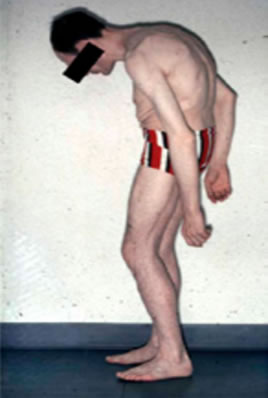</div>
							<div class="table_section_60">(A) etapa final de espondilitis anquilosante con cifosis severa de la columna torácica y cervical</div>
						</li>
						<li class="table_row">
							<div class="table_section_30">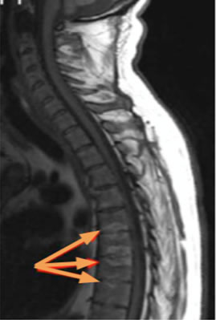</div>
							<div class="table_section_60">(B) lesiones inflamatorias activas y crónicas de la columna vertebral axial en espondiloartritis axial por RM–las flechas delgadas son degeneración grasa y las flechas gruesas espondilitis anterior</div>
						</li>
						<li class="table_row">
							<div class="table_section_30">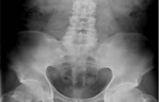</div>
							<div class="table_section_60">(c) sacroilitis grado 4 bilateral</div>
						</li>
					</ul>
					<div class="image-caption">
						<p>(adaptado del kit educativo de diapositivas de <a href="www.asas-group.org">ASAS</a>.)</p>
					</div>
					
					<p>Síndrome Extraarticular constituido por toda una constelación de manifestaciones que acontecen, con diferentes frecuencias, en los pacientes con espondiloartropatias. Incluyen un Síndrome General caracterizado principalmente por fatiga, perdida de peso y febrícula, junto a otros: a) Afectación Ocular: Uveítis Anterior o Iridociclitis. b) Afectación Cardiaca: Trastornos de la conducción (bloqueos de diverso grado). c) Afectación pulmonar. d) Afección renal: La función renal no suele afectarse más que en los casos de amiloidosis y en la infrecuente nefropatía por IgA. e) El síndrome neurológico de “Cola de Caballo”. f) La amiloidosis (afectación renal, menos frecuentemente cardiaca o intestinal). g) Manifestaciones mucocutáneas.</p>
					<p>Las lesiones mas características asientan electivamente en las entesis (del griego "enthesis" que quiere decir meter dentro o introducir, designa la zona de anclaje en el hueso de los tendones, ligamentos y capsulas articulares, y por tanto, se denomina entesopatía a los procesos patológicos que asientan aquí), son, pues, los puntos anatómicos de inserción ósea de tendones, fascias y ligamentos. Generalmente de naturaleza inflamatoria = "entesitis", con tendencia a producir fibrosis, osificación, y formación de hueso nuevo provocando el fenómeno de anquilosis ósea y consiguiente formación de entesofitos Las más comunes se sitúan en pelvis, trocánter femoral, tuberosidad humeral, patela, olécranon y calcáneo.</p>
					
					<h4>Organo de la Entesis</h4>
					<ul class="responsive_table">
						<li class="table_row">
							<div class="table_section_30">Imágenes</div>
							<div class="table_section_60">Descripción</div>
						</li>
						<li class="table_row">
							<div class="table_section_30">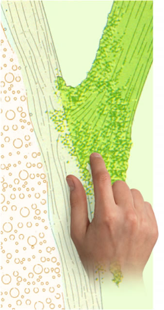</div>
							<div class="table_section_60">Conexión Normal de las fibras del tendón al hueso</div>
						</li>
						<li class="table_row">
							<div class="table_section_30"></div>
							<div class="table_section_60">Inflamación y erosión en Entesopatía Inflamatoria</div>
						</li>
						<li class="table_row">
							<div class="table_section_30"><a rel="gallery-3" href="images/photos/entesis3.jpg" title="Entesitis (Inserción del tendón de aquiles en el calcaneo izquierdo)" class="swipebox">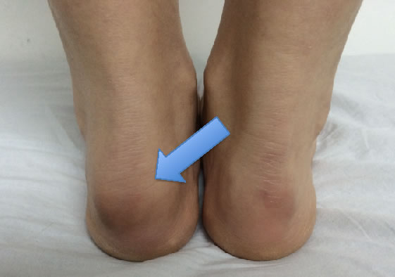</a>
							</div>
							<div class="table_section_60">Entesitis (Inserción del tendón de aquiles en el calcaneo izquierdo)</div>
						</li>
					</ul>
					<p>El desarrollo de osificaciones. La osificación de la entesis aparece aquí como una forma secundaria de cicatrización de una inflamación yuxtaósea. Sin embargo, ciertas observaciones clínicas no se ajustan a ésta secuencia de acontecimientos, puesto que hay enfermos positivamente diagnosticados de EA, totalmente limitados por una columna "en caña de bambú" que afirman no haber sufrido nunca, mientras que otros padecen dolores raquídeos inflamatorios durante años, sin que se produzca anquilosis, y mantienen una buena flexibilidad lumbar, y no desarrollan osificaciones.</p> 
					<h4>Entesopatía sitios frecuentemente involucrados espondilitis anquilosante</h4>
					<a rel="gallery-3" href="images/photos/entesis4.jpg" title="Entesopatía sitios frecuentemente involucrados espondilitis anquilosante" class="swipebox">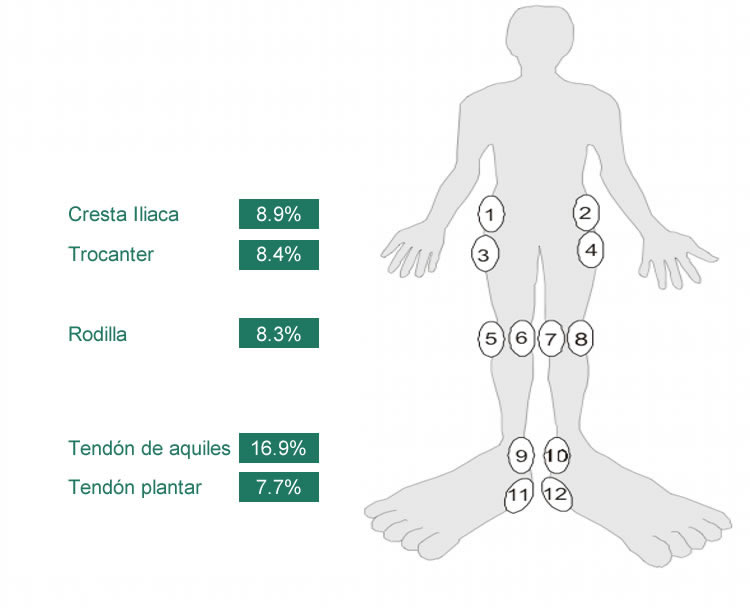</a>
					<div class="image-caption">
						<p>Rudwaleit M, et al. Arthritis Rheum. 2009. 60 : 717-27</p>
					</div>
					<p>Existen varios <strong>índices clinimétricos para evaluar las entesis</strong>, los mas comumente utilizados nacen de diferentes estudios epidemiológicos en donde se ha dado su aplicabilidad , acontinuación se muestran los diferentes índices aplicados en la clínica a saber:</p>
					  
					<div class="content-block-title">Índices clinimétricos para evaluar las entesis</div>
					<div class="list-block accordion-list">
					  <ul>
						<li class="accordion-item"><a href="#" class="item-content item-link">
							<div class="item-inner">
							  <div class="item-title">MASES (Maastricht Ankylosing Spondylitis Enthesitis Score) </div>
							</div></a>
						  <div class="accordion-item-content">
							<div class="content-block">
							  <a rel="gallery-3" href="images/photos/entesis5.jpg" title="MASES" class="swipebox">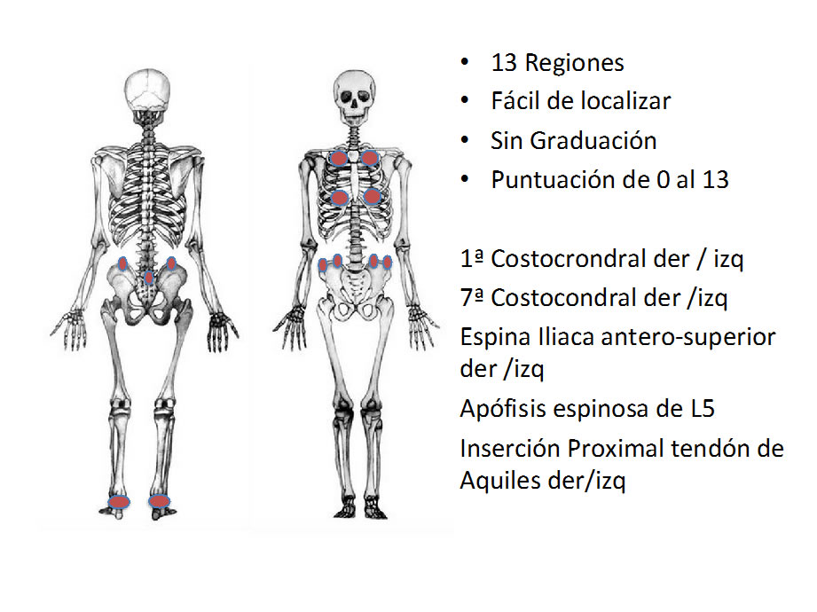</a>
							</div>
						  </div>
						</li>
						<li class="accordion-item"><a href="#" class="item-content item-link">
							<div class="item-inner">
							  <div class="item-title">SPARCC (Spondyloarthritis Research Consortium of Canada)</div>
							</div></a>
						  <div class="accordion-item-content">
							<div class="content-block">
							  <a rel="gallery-3" href="images/photos/entesis6.jpg" title="SPARCC" class="swipebox">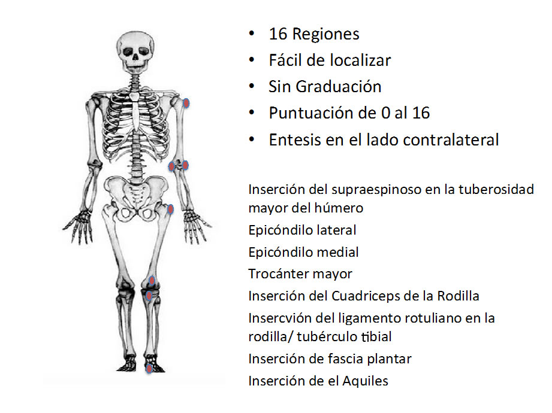</a>
							</div>
						  </div>
						</li>
					  </ul>
					</div>
					<h4>Dactilitis</h4>
					<p>En la literatura  médica se define la dactilitis como una «inflamación de un dedo de la mano o  del pie». Es una manifestación típica de las espondiloartropatías, y  especialmente de la artritis psoriásica, aunque otras causas pueden producir  esta peculiar inflamación. Existen dactilitis inflamatorias (espondiloar  tropatías, gota o sarcoidosis), dactilitis infecciosas (tuberculosis, sífilis  o dactilitis distal ampollosa) o dactilitis no inflamatorias (anemia de  células falciformes). En las espondiloartropatías es el resultado de una  tenosinovitis de la vaina flexora, pudiendo acompañarse secundariamente de  sinovitis. Por el depósito de urato, la gota puede producir una dactilitis que  se asemeja clínica y radiológicamente a las de las espondiloartropatías. La  sarcoidosis crónica causa dactilitis secundaria a invasión granulomatosa del  hueso y los tejidos circundantes. Las dactilitis infecciosas son más típicas  en edades pediátricas y pueden ser debidas a una osteomielitis, como en el  caso de la tuberculosis y la sífilis, o bien a infección de los tejidos  blandos, como la dactilitis distal ampollosa. Finalmente, en la anemia de  células falciformes la inflamación es consecuencia de infartos en la médula  ósea </p>
					
					
					<ul class="responsive_table">
						<li class="table_row">
							<div class="table_section_30">Tipo de Dactilitis</div>
							<div class="table_section_60">Mecanismos Patogénicos</div>
						</li>
						<li class="table_row">
							<div class="table_section_30"><strong>Dactilitis Inflamatorias</strong></div>
							<div class="table_section_60">&nbsp;</div>
						</li>
						<li class="table_row">
							<div class="table_section_30">Espondiloartropatías </div>
							<div class="table_section_60">Tenosinovitis de la vaina flexora</div>
						</li>
						<li class="table_row">
							<div class="table_section_30">Gota</div>
							<div class="table_section_60">Tenosinovitis de la Vaina Flexora y sinovitis por depósitos de urato monosódico</div>
						</li>
						<li class="table_row">
							<div class="table_section_30">Sarcoidosis</div>
							<div class="table_section_60">Granulomatosis invadiendo las falanges y tejidos blandos circundantes</div>
						</li>
						<li class="table_row">
							<div class="table_section_30"><strong>Dactilitis Infecciosas </strong></div>
							<div class="table_section_60">&nbsp;</div>
						</li>
						<li class="table_row">
							<div class="table_section_30">Tuberculosis </div>
							<div class="table_section_60">Osteomielitis con afectación de tejidos blandos</div>
						</li>
						<li class="table_row">
							<div class="table_section_30">Sífilis </div>
							<div class="table_section_60">Osteomielitis </div>
						</li>
						<li class="table_row">
							<div class="table_section_30">Dactilitis distal ampollosa </div>
							<div class="table_section_60">Infección de la almohadilla grasa de la superficie volar de los dedos </div>
						</li>
						<li class="table_row">
							<div class="table_section_30"><strong>Dactilitis No Inflamatorias</strong></div>
							<div class="table_section_60">&nbsp;</div>
						</li>
						<li class="table_row">
							<div class="table_section_30">Anemia de Células falciformes</div>
							<div class="table_section_60">Infarto vascular de la Médula ósea</div>
						</li>
					</ul>
					<a rel="gallery-1" href="images/photos/dactilitis1.jpg" title="Dactilitis en dedo de mano" class="swipebox">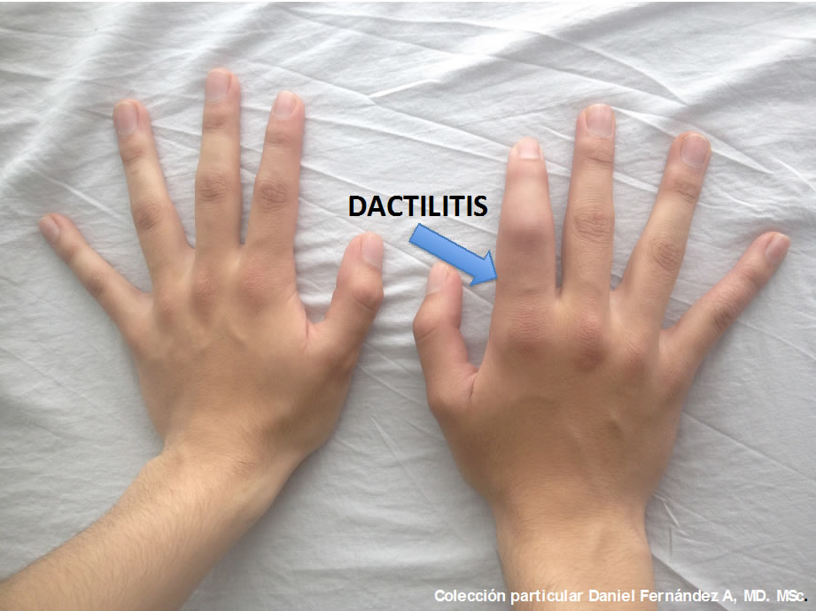</a>
				 	<a rel="gallery-1" href="images/photos/dactilitis2.jpg" title="Dactilitis en dedo de pie" class="swipebox">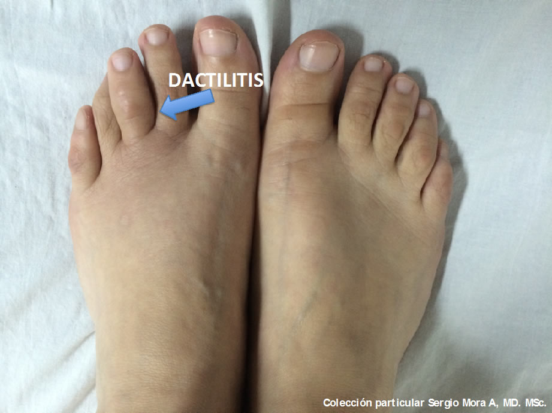</a>
					<p>En cuanto a las manifestaciones  extrarticulares la Uveítis cobra un aspecto  importante .</p>
					<p>La uveítis se define como  la inflamación intraocular que compromete estructuras como iris, cuerpo ciliar  y coroides, las cuales conforman el tracto uveal, de donde se deriva su  clasificación anatómica como: anterior, intermedia o posterior. </p>
					<p>Obedece a diversas causas, como: infección, malignidad, trauma, toxicidad  y, con mayor frecuencia, es idiopática o secundaria a enfermedades autoinmunes La uveítis anterior es la presentación  clínica más común en la práctica oftalmológica y corresponde aproximadamente al  90% de los casos,. La Uveítis es la manifestación extra-articular más frecuente  en espondiloartropatías seronegativas y se ha reportado hasta en un tercio de  los pacientes con espondiloartropatías.</p>
					<p>El riesgo de tener ( desarrollar ) espondilitis  anquilosante con  cualquier tipo de  uveitis es del 15 %, esta posibilidad se incrementa a un 30% a 50 % si el  paciente se presenta  con uveitis  anterior aguda y se incrementa la posibilidad a un 84 % - 90 % si el paciente  ademas de Uveitis anterior  Aguda , es  HLA B 27. La probabiliad de Artritis Reactiva es de 3% para cualquier tipo de  Uveitis y se incrementa a un 5 % al 10 % si es uveitis anterior Aguda.<br>
					La posibilidad de tener una  Espondiloartropatía Indiferenciada es de el 5 % para cualquier tipo de uveitis  e incrementa a  un 8% a 12 % para una  Uveítis Anterior Aguda , artritis Psoriásica o EII son la causalidad en 1% al 3  % de todas las causas de uveítis. el HLA B 27 puede ser positivo  en pacientes con uveitis anterior en un rango  de 31 % a 71, la causalidad idiopática de la uveítis varía  de 27% a 48%<br>
					dentro de la etiología autoinmune  subclasificamos en dos tipos:</p>
					<p>1. la asociada con HLA B 27, en la cual los  alelos dan una predisposición de un 15 % , <strong><em>usualmente es en hombres,  unilateral y alternante, varias recurrencias y de aspecto no granulomatoso</em></strong></p>
					<p>2. Uveitis anterior aguda HLA B 27 negativo: <strong><em>afecta  ambos sexos , afección crónica bilateral y apariencia granulomatosa</em></strong>. Este grupo también puede incluir formas de artritis reactiva, otras autoinmunes o infamatorias, Behceth, y espondiloartropatias seronegativas</p>
					<p>Con respecto a la terminología que hace referencia a la actividad de la enfermedad, se clasifica como:</p>
					<p><strong><em>inactiva:</em></strong> (celularidad ausente en la cámara anterior),  empeoramiento (incremento de dos grados en el nivel de inflamación o el aumento  de celularidad de grado 3+ a 4+).<br>
					<strong><em>mejoría:</em></strong> (disminución de dos grados en el nivel de inflamación  o disminución a grado 0+) .<br>
					<strong><em>remisión: </em></strong> (inactividad de la enfermedad por un periodo  mayor de tres meses después de haberse suspendido el tratamiento)</p>
					
					<blockquote>Criterios de Clasificación</blockquote>
					<h3>Criterios de Diagnóstico para la Espondiloartritis axial </h3>
					<p>Como a menudo tarda años en desarrollarse, la presencia de la  espondiloartritis axial puede no ser siempre evidente en las primeras etapas de  la enfermedad. A medida que la enfermedad progresa, ocurren cambios crónicos y  daños óseos, dando lugar a manifestaciones radiográficamente identificables,  incluyendo la sacroilitis radiográfica. Los criterios tradicionales, como los  criterios de Nueva York modificados, se basan en estos cambios radiográficos  para clasificar definitivamente a un paciente con espondilitis anquilosante . Como  resultado, las primeras etapas de la espondiloartritis axial son difíciles de  identificar y a menudo existe un retraso de alrededor de 5-10 años en el  diagnóstico de la espondiloartritis axial. <br>
						Los criterios adecuados para usarse en la clasificación, a diferencia del  diagnóstico, son fundamentalmente diferentes, siendo este último usado en los  pacientes individuales, mientras que el primero permite la delineación de una  población homogénea. <br>
					La necesidad de un diagnóstico más temprano de la espondiloartritis axial  se ha cumplido con la inclusión de la RM como herramienta de diagnóstico en los  criterios ASAS, así que los característicos cambios inflamatorios tempranos en  las articulaciones sacroiliacas pudieran detectarse. Esto ha sido cada vez más  importante como resultado de que la terapia con inhibidores de TNF-alfa ha  demostrado proporcionar una rápida mejoría en casi todos los síntomas de la  espondilitis anquilosante, y los pacientes con una enfermedad de corta duración  y un buen estado funcional, son más propensos a responder a ella. Además, una  propuesta reciente ha sugerido que todos los pacientes con formas axiales de  espondiloartritis, que van desde espondiloartritis axial no radiográfica a  espondilitis anquilosante, deben ser considerados como un continuo de la  enfermedad, Mientras que los criterios tradicionales pudieran seguir siendo  relevantes para las últimas etapas de la enfermedad, ha habido un cambio  reciente en el desarrollo de criterios que también abarca la etapa temprana de  la espondiloartritis axial.</p>
					
					<h4>Concepto unificador de la espondiloartritis axial (adaptado de Rudwater et al.)</h4>
					<p><a rel="gallery-1" href="images/photos/espondilitisunificador.jpg" title="Concepto unificador de la espondiloartritis axial (adaptado de Rudwater et al.)" class="swipebox">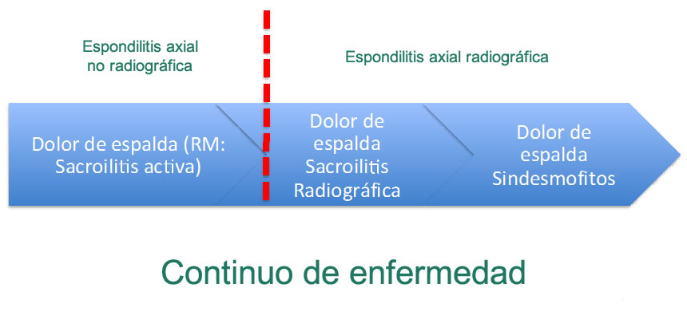</a>
						
					<a rel="gallery-1" href="images/photos/espondiloartritisaxial.jpg" title="Espondiloartritis axial" class="swipebox">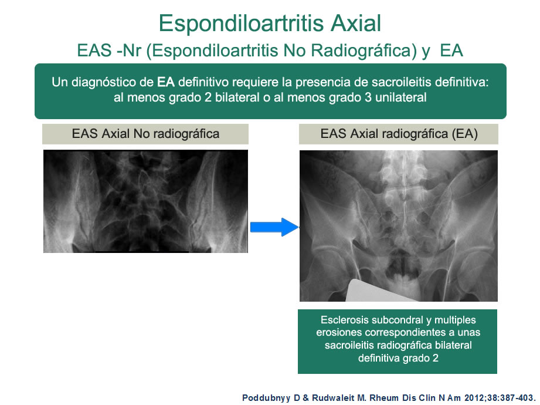</a></p>
					<p>Existen diferentes criterios de clasificación que se han desarrollado a lo largo de los años; algunos se enfocan específicamente en la espondilitis anquilosante y otros brindan definiciones a lo largo de todo el espectro de la enfermedad espondiloartritis. Los criterios más recientes ASAS incluyen técnicas de RM que se utilizan para identificar la espondiloartritis no radiográfica y otros criterios adicionales se encuentran en desarrollo. </p>
					<p><strong>Criterios que clasifican únicamente a la espondilitis anquilosante: criterios de Nueva York modificados</strong> La espondilitis anquilosante, siendo la forma más avanzada de lo que ahora consideramos como un espectro de la enfermedad espondiloartritis, ha recibido el más amplio interés y fue la primera en ser clasificada oficialmente. Por lo tanto, los siguientes criterios de Nueva York modificados, como fueron los primeros que se crearon, sólo clasifican la espondilitis anquilosante usando la evidencia radiográfica como uno de sus criterios. Como la enfermedad ahora se puede detectar mediante RM, el uso de estos criterios por sí solos podría resultar en un retraso de 5-10 años en el diagnóstico de espondiloartritis como resultado de que no se detectan las etapas no radiográficas de la enfermedad.</p>
					<h3>Criterio de Nueva York</h3>
					<p>Los actuales <strong>criterios de Nueva York modificados</strong> son los últimos de una serie que comenzó como los criterios de Roma y que han sido actualizados periódicamente, más recientemente, para discriminar entre el dolor lumbar crónico no específico y el dolor de espalda inflamatorio utilizado como criterio para la espondilitis anquilosante. De acuerdo con los criterios de 1984 que actualmente se utilizan, los pacientes se clasifican con espondilitis anquilosante definida si el criterio radiográfico se asocia con al menos un criterio clínico.</p>
					<a href="criteriony.html" class="button_full">Calculadora de Criterio de Ny</a>
					<h3>Criterios que definen todo el espectro de la espondiloartritis: Criterios del ESSG y Amor</h3>
					<p>Los  criterios del ESSG y Amor para la espondiloartritis fueron los primeros  criterios que abarcaron todo el espectro de la enfermedad; en los últimos se  incluyeron subconjuntos de pacientes con espondiloartritis axial y periférica.  Fue muy importante su extensa cobertura de la enfermedad, ya que se pudo  identificar un espectro clínico más amplio de pacientes con espondiloartritis,  incluyendo aquellos con espondiloartritis indiferenciada.Sin embargo, esto  también significa que existe una probabilidad reducida de diagnosticar una  enfermedad específica, en particular la espondiloartritis axial.Algunos  informes sugieren que los criterios Amor son ligeramente mejores que los  criterios del ESSG, lo que puede explicarse por el hecho de que se necesitan al  menos de tres a cuatro características para hacer un diagnóstico definitivo. La omisión de  los criterios relacionados con la RM significa que tanto los criterios Amor  como los del ESSG no se pueden utilizar para diagnosticar o valorar la  espondiloartritis axial no radiográfica.</p>
					<h3>Criterios Amor que definen la Espondiloartritis</h3>
					<p><em>(Los números en paréntesis indican los puntos adscritos a esa característica clínica en particular)</em></p>
					<strong>Síntomas Clínicos o Antecedentes: </strong>
					<ul>
						<li>Dolor durante la noche, o rigidez matutina de la columna lumbar o dorsal (1)</li>
						<li>Oligoartritis asimétrica (2)</li>
						<li>Dolor en los glúteos (1) o alternante en el glúteo derecho o izquierdo (2) </li>
						<li>Dactilitis (2)</li>
						<li>Dolor en los talones u otra entesitis (2)</li>
						<li>Iritis (2)</li>
						<li>Uretritis o cervicitis no gonocócica acompañando la artritis o dentro de un mes antes del comienzo de la misma (1)</li>
						<li>Diarrea aguda acompañando la artritis o dentro de un mes antes del comienzo de ella (1)</li>
						<li>Presencia o historia de psoriasis, balanitis o enfermedad inflamatoria intestinal (colitis ulcerosa o enfermedad de Crohn) (2)</li>
					</ul>
					<p><strong>Respuesta al Tratamiento:</strong></p>
					<ul>
						<li>Buena respuesta a los AINEs en menos de 48 horas, o reaparición del dolor menos 48 horas después de interrumpirlos (2) </li>
					</ul>
					<p><strong>Hallazgos Radiográficos:</strong></p>
					<ul>
						<li>Sacroilitis (grado  si es bilateral; grado 3 si es unilateral) (3)</li>
					</ul>
					<p><strong>Antecedentes Genéticos</strong>: <br>
					</p>
					<ul>
						<li>Presencia de HLA-B27, o antecedentes familiares de espondilitis anquilosante, síndrome de Reiter, uveítis, psoriasis o enterocolopatías crónicas (2)</li>
					</ul>
					<p><strong><em>Se considera que un paciente padece espondiloartritis si la suma de puntos es &gt; 6 </em></strong></p>
					<h3>Criterios de Grupo Europeo para el Estudio de las Espondiloartropatías</h3>
					<p>Dolor de espalda ó Sinovitis asimétrica inflamatorio* o con predominio de las  extremidades inferiores  y uno o más de los siguientes criterios.</p>
					<ul>
						<li> Historia familiar positiva</li>
						<li> Psoriasis</li>
						<li> Enfermedad inflamatoria intestinal</li>
						<li> Uretritis, cervicitis o diarrea aguda en el mes previo al inicio de la artritis</li>
						<li> Dolor en los glúteos alternante en el lado derecho o en el izquierdo</li>
						<li> Entesopatía</li>
						<li> Sacroilitis</li>
					</ul>
					<p><em>*Dolor de espalda caracterizado por al menos cuatro de los siguientes aspectos: inicio antes de los 45 años, inicio insidioso, mejoría con el ejercicio, asociado con rigidez matinal, con una duración de al menos 3 meses. </em>
					</p>
					<h3>Criterios que clasifican todo el espectro de la espondiloartritis axial: Criterios ASAS</h3>
					<p>Hace relativamente poco tiempo que se ha producido un aumento en los conocimientos sobre el nivel comparable de actividad de la enfermedad entre la espondiloartritis axial no radiográfica y radiográfica. Esto ha dado como resultado el desarrollo de los últimos criterios ASAS, que permiten el diagnóstico de la espondiloartritis en una etapa más temprana a través de la detección de inflamación activa con la RM (favor de referirse a la Sección 9.2.2 para obtener más información sobre la RM). Se considera el uso de este sistema de clasificación en los pacientes si son menores de 45 años  y han venido sufriendo de dolor crónico de espalda  baja durante tres meses o más <br>
					</p>
					<a href="asas.html" class="button_full">Calculadora ASAS</a>
					
					<blockquote>Hallazgos paraclinicos</blockquote>
					<p>Aproximadamente el 15 % de los pacientes presentan anemia normocitica normorómica correspondiente a una anemia de enfermedad crónica. Los niveles de VSG y la PCR están elevados en aproximadamente el 75% de los pacientes y se pueden correlacionar con la actividad de la enfermedad en algunos, pero no en todos los pacientes; estos valores podrían incluso usarse como marcadores de la enfermedad y de respuesta clínica.<br>
					La fosfatasa alcalina esta elevada en 50 % de los pacientes, esto indica una osficación activa pero no se correlaciona con la actividad de la enfermedad. La CPK  esta ocasionalmente elevada pero no está asociada con debilidad muscular. Los niveles de IgA pueden estar elevados, estos correlacionándose con los reactantes de fase aguda.</p>
					<p>En diversos estudios de asociación de todo el genoma se ha observado que el riesgo de desarrollar espondiloartritis axial se incrementa en gran medida en  las personas que poseen ciertos genes. En particular, varios estudios han demostrado que la espondiloartritis axial está fuertemente asociada con el <strong>alelo</strong>HLA-B27.</p>
					<p><strong>¿Qué es el HLA-B27? </strong><br>
					Los códigos del grupo de genes del Antígeno leucocitario Humano (HLA, por sus siglas en inglés) para las proteínas desempeñan un papel importante en el sistema inmunológico. Los antígenos HLA de clase I (a los que pertenece el  HLA-B27) se encuentran en la superficie externa de las células y presentan fragmentos de otras proteínas que se encuentran dentro de la célula en su  superficie. Si la proteína presentada es detectada como extraña por otras células del sistema inmunológico (es decir, que no pertenece al huésped sino a un invasor bacteriano, por ejemplo), entonces se desencadena una respuesta inmune en contra de la &ldquo;infección&rdquo; y se activan mediadores del sistema inmunológico  para controlarla.</p>
					<p>El HLA-B27 es un alelo específico del gen HLA-B, que se cree que está  asociada con la familia de enfermedades de las espondiloartritis. El papel  preciso que des- empeña en la enfermedad no se entiende por completo todavía,  pero una teoría sugiere que el mal plegamiento de la cadena pesada de la  molécula del HLA-B27, aumenta la producción de la citocina inflamatoria IL-23.  Se piensa que el papel de esta citocina en la proliferación de otras células  del sistema inmunológico (como los linfocitos T) proporciona parte de la  explicación sobre la inflamación aberrante observada en las espondiloartritis.</p>
					<p><strong>El HLA-B27 y su asociación con la espondiloartritis axial </strong></p>
					<p>Tener el alelo HLA-B27 pone a una persona en un 5% de riesgo de desarrollar espondilitis anquilosante y la estrecha asociación de este gen y la espondiloartritis axial se destaca por la observación de que más del 90% de todos los pacientes con espondilitis anquilosante son HLA-B27 positivos, en  comparación con el 40%, 50% y 80% de los pacientes con artritis enteropática, artritis psoriásica y artritis reactiva, respectivamente.<br>
					Un estudio en pacientes de la GESPIC sugirió que la presencia del alelo HLA-B27 es la misma en los pacientes con espondiloartritis axial no radiográfica como en aquellos con espondilitis anquilosante y que el tener el HLA-B27 se asocia con una menor edad al inicio de la enfermedad.</p>
					
					<blockquote>Tratamiento</blockquote>
					<h3>Lineamientos Internacionales para el Manejo de la Espondiloartritis axial/Espondilitis Anquilosante</h3>
					
					<p>ASAS y la Liga Europea contra el Reumatismo (EULAR, por sus siglas en inglés) fueron los que primero elaboraron lineamientos para el tratamiento de la espondilitis anquilosante en 2005.Aunque las recomendaciones son oficialmente para las personas con espondilitis anquilosante, también se considera que estos lineamientos son aplicables a los pacientes con espondiloartritis axial no radiográfica. En esta sección se muestra un resumen de la actualización de 2010 de las recomendaciones ASAS/EULAR para el manejo de la espondilitis anquilosante.</p>
					<h4>Manejo de la enfermedad </h4>
					<p>El tratamiento de la espondilitis anquilosante se debe adaptar a cada persona en particular mediante el monitoreo a través de una serie de herramientas e instrumentos, incluyendo imágenes, pruebas de laboratorio y cuestionarios a los pacientes. Los factores que influyen en el manejo se incluyen:</p>
					<ol>
						<li>						Las manifestaciones actuales de la enfermedad</li>
						<li> El nivel actual de los síntomas, hallazgos clínicos y factores pronósticos</li>
					</ol>
					<p>						El estado clínico general (edad, sexo, comorbilidad, medicación concomitante, factores psicosociales) También se recomienda un enfoque multidisciplinario en la valoración y manejo de las comorbilidades y manifestaciones extra-articulares de la espondilitis anquilosante, como la psoriasis y la enfermedad inflamatoria intestinal, a través de la colaboración de los respectivos especialistas. Además, si el curso de la enfermedad cambia significativamente, se debe realizar una valoración adecuada, por ejemplo, técnica de imágenes.</p>
					<h4> Tratamiento no farmacológico: </h4>
					<p>Un enfoque importante del tratamiento de la espondilitis anquilosante debe ser el uso de las terapias no farmacológicas, como la educación del paciente, el ejercicio regular o la terapia física y posiblemente apoyarse en asociaciones de pacientes y grupos de autoayuda.<br>
					En algunos pacientes, la cirugía puede considerarse necesaria. La artroplastía total de cadera puede ser una opción para los pacientes con discapacidad o dolor refractario y evidencia radiográfica del daño estructural, independiente de la edad. Por otro lado, la osteotomía espinal correctiva podría ser considerada para los pacientes con severa deformidad incapacitante.</p>
					
					<h4>Tratamiento farmacológico:</h4>
					<p>Medicamentos anti-inflamatorios no esteroideos (AINEs): Son considerados como el tratamiento convencional para la espondilitis anquilosante, ya que mejoran rápidamente los síntomas, los dolores de columna y la rigidez. Se recomienda la administración continua de AINEs a los pacientes con enfermedad persistentemente activa y sintomática. También existe alguna evidencia de que el tratamiento continuo con AINEs impide la formación de hueso nuevo en los pacientes con espondilitis anquilosante. Sin embargo, estos medicamentos rara vez se prescriben como tratamiento a largo plazo debido a sus considerables efectos secundarios para obtener sólo reducciones mínimas a largo plazo en la progresión de la enfermedad. Al utilizar AINEs, deben tenerse en cuenta sus efectos secundarios conocidos, como el aumento de complicaciones cardiovasculares, gastrointestinales y renales, para asegurarse de que la relación riesgo-beneficio de su uso se mantenga favorable. Los inhibidores de la ciclooxigenasa-2 (COX-2) como el celecoxib, tienen menos efectos gastrointestinales secundarios y pueden ser considerados como una opción de tratamiento alternativa. Sin embargo, los inhibidores de la COX-2 no son necesariamente más eficaces que los AINEs, son más costosos y pueden tener otros efectos secundarios.</p>
					<p>Con respecto a eventos puntuales sobre los AINEs los AINES son la primera linea de manejo en Espondiloartropatias axiales incluyendo EA (Espondilitis Anquilosante), a diferencia de la AR los DMARDs tienen una mínima efectividad y solo en la actividad periférica y el manejo continuo trae consigo importantes consideraciones en  el aspecto de seguridad. Los estudios realizados con AINES han sido básicamente con pacientes con EA, basados solamente en experiencia clínica se asume que deben ser igualmente  efectivos en los pacientes con SpA -Pre-radiográfica y también juegan un papel preponderante en el manejo de la SpA periférica. En la mayoría la eficacia clínica es rápida y un efecto total puede verse en 48 a 72 horas, e n otros casos un período mas prolongado (hasta 2 semanas) es necesario para alcanzar el efecto analgésico y antinflamatorio y si no se experimenta  una respuesta en dos semanas  es poco posible que ocurra mas adelante en el tratamiento.</p>
					<strong><em>Dosis de AINEs Empleadas para Tratar Espondilitis Anquilosante</em></strong>
					
					<ul class="responsive_table">
						<li class="table_row">
							<div class="table_section_30">Farmaco</div>
							<div class="table_section_30">Vida media (Horas)</div>
							<div class="table_section_30">Dosis máxima aprobada (mg)</div>
						</li>
						<li class="table_row">
							<div class="table_section_30">Aceclofenaco</div>
							<div class="table_section_30">Aprox 4</div>
							<div class="table_section_30">200</div>
						</li>
						<li class="table_row">
							<div class="table_section_30">Clecoxib</div>
							<div class="table_section_30">8-12</div>
							<div class="table_section_30">400</div>
						</li>
						<li class="table_row">
							<div class="table_section_30">Etoricoxib</div>
							<div class="table_section_30">Aprox 22</div>
							<div class="table_section_30">90</div>
						</li>
						<li class="table_row">
							<div class="table_section_30">Ibuprofeno</div>
							<div class="table_section_30">1.8-3.5</div>
							<div class="table_section_30">2400-3200</div>
						</li>
						<li class="table_row">
							<div class="table_section_30">Indometacina</div>
							<div class="table_section_30">Aprox 2</div>
							<div class="table_section_30">150-200</div>
						</li>
						<li class="table_row">
							<div class="table_section_30">Ketoprofeno</div>
							<div class="table_section_30">1.5-2.5</div>
							<div class="table_section_30">200-300</div>
						</li>
						<li class="table_row">
							<div class="table_section_30">Meloxicam</div>
							<div class="table_section_30">Aprox 20</div>
							<div class="table_section_30">15</div>
						</li>
						<li class="table_row">
							<div class="table_section_30">Naproxeno</div>
							<div class="table_section_30">10-18</div>
							<div class="table_section_30">1000</div>
						</li>
						<li class="table_row">
							<div class="table_section_30">Fenilbutazona</div>
							<div class="table_section_30">50-100</div>
							<div class="table_section_30">600</div>
						</li>
						<li class="table_row">
							<div class="table_section_30">Piroxicam</div>
							<div class="table_section_30">30-60</div>
							<div class="table_section_30">20</div>
						</li>
					</ul>
					<p>Los AINES tienen influencia en la inflamación activa el esqueleto axial, la inflamación puede persistir a pesar  incluso con el control total o adecuado de los síntomas  visto por RMN y radiográficamente. Y de hecho no es claro si la inflamación asintomática dada por PCR elevada o por osteitis en la RMN tiene relevancia clínica. Sin embargo hoy día el manejo de la EA recae en los sintomas  y actualmente no hay una posición oficial si la inflamación vista por RMN constituye un objetivo terapéutico, en este respecto no hay recomendaciones sobre el grupo con adecuada respuesta pero persistencia de inflamación local o sistémica.</p>
					<p>Los analgésicos podrían ser considerados para el dolor residual de columna después de que otros tratamientos recomendados anteriormente hayan fracasado.Los glucocorticoides son hormonas esteroides que han demostrado ser eficaces en la reducción de la inflamación en articulaciones individuales, a través de inyecciones. Su uso en la enfermedad axial no está respaldado por evidencia.</p>
					<p>Los fármacos antirreumáticos modificadores de la enfermedad (FARMEs) como la sulfasalazina, el metotrexato y la leflunomida juegan un papel clave en el retraso de la progresión de la enfermedad en pacientes con enfermedad reumática medidada inmunológicamente, artritis reumatoide. Por el contrario, los FARMEs sintéticos no han demostrado eficacia en el manejo de las manifestaciones axiales de la espondilitis anquilosante. Existe, sin embargo, alguna evidencia de su eficacia en el tratamiento de las características periféricas de la espondilitis anquilosante.</p>
					<p>Los <strong>inhibidores de TNF-alfa </strong>se han establecido para el tratamiento de la espondiloartritis, alcanzando reducciones en la evidencia de actividad de la enfermedad  sobre todo en el dolor, la rigidez y la fatiga. Los estudios han demostrado que el tratamiento con bloqueo de TNF ejerce un profundo efecto benéfico sobre los síntomas en la mayoría, pero no en todos los pacientes con espondiloartritis severa, y debe administrarse a los pacientes con actividad persistente y elevada de la enfermedad. Desde hace 7 años, hasta el día de hoy, se ha publicado un seguimiento a largo plazo de pacientes con espondilitis anquilosante tratados con inhibidores de TNF-alfa, demostrando buena eficacia a largo plazo si se continúa con el tratamiento. No existe evidencia que respalde el uso obligatorio de los FARMEs antes o simultáneamente a la terapia con inhibidores de TNF en pacientes con enfermedad axial o una diferencia en la eficacia de los diversos inhibidores de TNF-alfa en las manifestaciones de la enfermedad axial y articular/enteseal; pero en presencia de la enfermedad inflamatoria intestinal se deben tomar en cuenta una diferencia en las necesidades de eficacia gastrointestinal. El cambio a un segundo inhibidor de TNF-alfa podría ser beneficioso, especialmente en pacientes con pérdida de la respuesta, sin embargo, no existe evidencia que respalde el uso de agentes biológicos que no sean los inhibidores de TNF-alfa en la espondilitis anquilosante.</p>
					
					<h3>Manejo de la Espondiloartritis Axial</h3>
					<h4>Inhibidores de TNF-alfa</h4>
					<p>TNF-alfa es un mediador importante de las cascadas inflamatorias y, por lo tanto, tiene un papel central en la progresión de la espondilitis anquilosante. Como resultado, se ha investigado la eficacia clínica de varios inhibidores de TNF-alfa. Cuatro agentes, que se resumen en la Tabla 17, están actualmente aprobados para su uso en esta indicación: adalimumab, etanercept, infliximab y golimumab y certolizumab pegol Los inhibidores de TNF-alfa tienen beneficios terapéuticos rápidos y persistentes y cuando se interrumpen, provocan una recaída.</p>
					
					<strong>Inhibidores de TNF-alfa recomendados</strong>
					<a rel="gallery-1" href="images/photos/tnfalfa.jpg" title="inhibidores de TNF-alfa" class="swipebox">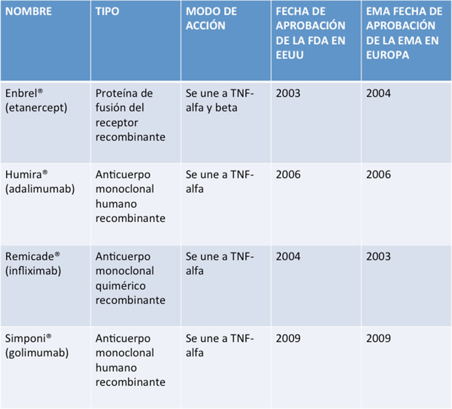</a>
					
					<h4>Uso de la terapia de inhibidor de TNF-alfa en la etapa temprana de la espondilitis anquilosante:</h4>
					<p>Se ha demostrado en numerosos estudios que el tratamiento con inhibidores de TNF-alfa tiene un efecto rápido, positivo en todos los aspectos de la espondilitis anquilosante, incluyendo la progresión de la enfermedad y la inflamación espinal. Además, se ha demostrado que los pacientes con más corta duración de la enfermedad responden más fuertemente al tratamiento inhibidor de TNF-alfa, en comparación con los pacientes en quienes ya está establecida la enfermedad a largo plazo. Por lo tanto, se presume que el uso de inhibidores de TNF-alfa en la fase inicial de la enfermedad (incluyendo la no radiográfica) puede ser altamente eficaz. </p>
					<h4>Lineamientos ASAS para el Manejo de la Espondilitis Anquilosante con Inhibidores de TNF-alfa </h4>
					<p>En respuesta a la creciente importancia del tratamiento con inhibidores de TNF-alfa en el manejo de la espondilitis anquilosante, ASAS estableció lineamientos adicionales en 2003, con actualizaciones en 2006 y 2010. Las recomendaciones de la actualización de 2010 se presentan a continuación:</p>
					<strong>Diagnóstico:</strong>
					<p>Los pacientes que cumplan con los criterios de Nueva York modificados para la espondilitis anquilosante definitiva o el criterio de ASAS para la espondiloartritis axial.</p>
					
					<h4>Enfermedad activa:</h4>
					<p>Enfermedad activa durante &gt;= 4 semanas, BASDAI &gt;= 4 (0-10) y opinión positiva de expertos.</p> 
					<strong>Fracaso en el Tratamiento:</strong>
					<p>Todos los pacientes deben haber tenido un estudio terapéutico adecuado con AINEs, definido como al menos dos AINEs durante un periodo de 4 semanas en total, a la dosis máxima recomendada, a menos que haya estado contraindicado.</p>
					<p><strong>Enfermedad Axial:</strong> no se requiere pretratamiento con FARMEs.<br>
					<strong>Artritis periférica:</strong> una inyección local de corticosteroides, si es adecuado; por lo general, deben tener un estudio terapéutico con un FARME, preferiblemente sulfasalazina.<br>
					<strong>Entesitis:</strong> tratamiento local apropiado.<br>
					<strong>Valoración de la Enfermedad:</strong> Grupo central de ASAS para la práctica diaria y BASDAI.<br>
					<strong>Valoración de la respuesta:</strong> Mejora del 50% en el BASDAI o cambio absoluto de 2 (0-10) y la opinión positiva de expertos a favor de continuar el tratamiento.</p>
					<p><strong>Factores para la interrupción de los inhibidores de TNF-alfa:</strong>
					Los lineamientos para la interrupción del tratamiento con inhibidores de TNF-alfa recomiendan que se deba interrumpir en pacientes que no tengan una respuesta adecuada después de al menos doce semanas. Una respuesta adecuada se define por una mejoría de BASDAI mayor del 50% o un cambio absoluto de 20 mm (escala de 0-100), así como la opinión de un experto que respalde una respuesta adecuada.</p>
					
					
					<h3>Lecturas recomendadas</h3>
					<ol class="simple_list">
						<li>Dougados M, d'Agostino MA, Benessiano J, et al. The DESIR cohort: a 10-year follow-up of early inflammatory back pain in France: study design and baseline characteristics of the 708 recruited patients. Joint Bone Spine 2011;78:598-603.</li>
						<li>Reveille JD, Witter JP, Weisman MH. The prevalence of axial spondyloarthritis in the United States: Estimates from the U.S. National Health and Nutrition Examination Survey, 2009-10. Arthritis Care Res (Hoboken) 2012.</li>
						<li>Braun J, Sieper J. Ankylosing spondylitis. Lancet 2007;369:1379-90.</li>
						<li>Rudwaleit M, Khan MA, Sieper J. The challenge of diagnosis and classification in early ankylosing spondylitis: do we need new criteria? Arthritis Rheum 2005;52:1000-8.</li>
						<li>Sieper J, Rudwaleit M. Early referral recommendations for ankylosing spondyliTis (including pre-radiographic and radiographic forms) in primary care. Ann Rheum Dis 2005;64:659-63.</li>
						<li>Rudwaleit M, van der Heijde D, Khan MA, et al. How to diagnose axial spondyloarthritis early. Ann Rheum Dis 2004;63:535-43.</li>
						<li>Rudwaleit M, van der Heijde D, Landewe R, et al. The development of Assessment of SpondyloArthritis international Society classification criteria for axial spondyloarthritis (part II): validation and final selection. Ann Rheum Dis 2009;68:777-83.</li>
					</ol>
					
					<ul class="features_list">
						<li><a href="cont_enfoque.html"><span>Ant - Enfoque clínico del paciente</span></a></li>
						<li><a href="cont_artritis.html"><span>Sig - Artritis psoriásica</span></a></li>
					</ul>
					<a href="menu.html" class="button_full">Menu principal</a> 
				</div>
			</div>
		</div>
	</div>
</div>
